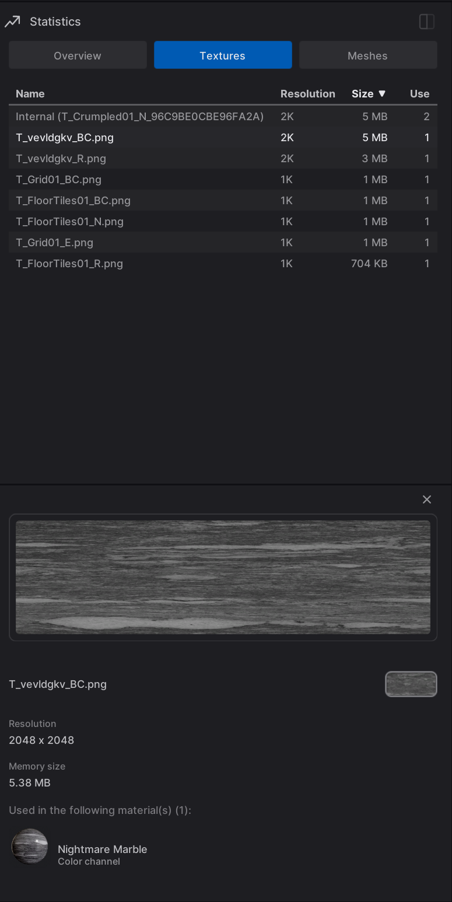

Epic Games (Twinmotion)
Architecting tools and optimizing performance for industry-leading real-time architectural visualization.
Statistics Monitor Panel
I refactored the statistics backend and implemented a new, high-performance UI for real-time resource tracking. The monitor features three specialized tabs:
Overview
Real-time telemetry for CPU, RAM, and VRAM usage.
Textures
Deep dependency tracking and in-place asset replacement.
Meshes
Memory consumption and triangle count analysis per asset.

Material Panel Performance Refactor
Resolved critical performance bottlenecks in scenes with large material counts (5,000+). I migrated the entire panel from a legacy Wrap Box to a virtualized Unreal TileView. This required a massive refactor to port years of accumulated features, including complex sorting, context menus, and drag-and-drop operations, while ensuring a smooth user experience.
Engine Upgrades & Cinematic Systems
- Managed complex Unreal Engine version upgrades, debugging rendering regressions in shaders and animation data.
- Developed high-end Cinematic Camera features, including adjustable lag and physical Focus Hunting effects.
- Engineered the Mac Arm64/Universal packaging pipeline for native Apple Silicon support.
- Implemented a robust Undo/Redo system for material and folder management.